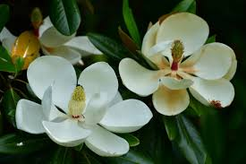

DIVERSIDAS DE FLOR EN MEXICO
Pulse sobre la imagen para ir a google
Como
podrás ver, muchas de estas flores no sólo son únicas por su belleza, sino
por la rareza con que brotan, además de los múltiples secretos que guardan,
entre los que podrían hallarse posibles curas a enfermedades y
padecimientos, además de ser fuente prometedora de alimentación.
Si alguna vez tienes la oportunidad de encontrarte con alguna de
ESTAS FLORES
atrapa su belleza en una foto y evita cortarla sin razón, menos lo hagas si
está en algún grado de peligro, así contribuirás a que pueda seguir siendo
observada, reproducida, apreciada y aprovechada sabiamente por las futuras
generaciones.
| DIVERSIDA DE FLORES EN MEXICO | |
|---|---|
 |  |
 |  |
El cempasúchil, la nochebuena, el alcatraz y la vainilla son flores que guardan una estrecha relación con México y su cultura. Las encontramos en altares, durante las fiestas decembrinas, en famosas obras de arte y hasta en el interior de las casas. Por tanto, al preguntar por nuestra flor nacional, no resulta extraño que surja, en primera estancia, un fugaz momento de duda, ya que vienen a la mente las imágenes de todas las anteriores.
Sin embargo, el espécimen que nos representa en el mundo, por lo menos de forma oficial, es otro. Hablamos de la dalia, una planta con 45 variantes, de las cuales 35 son endémicas del territorio mexicano.
la dalia es mexicana
Foto: Anna Koval.
La flor que cautivó a más de un extranjero
El encanto de la dalia es tal, que más de un extranjero se ha quedado perplejo frente a ella. Tal es el caso del botánico español Francisco Hernández, quien poco tiempo después de la Conquista, escribió en su libro La Historia Natural de Nueva España, que era nativa del estado de Morelos. Una experiencia similar la vivió el explorador Alexander von Humboldt, quien se llevó un par de semillas de regreso a Europa después de un largo recorrido por México. ç
Su belleza y rareza también logró inspirar elapodo de Elizabeth Short (la Dalia Negra) cuyo asesinato sin resolver, en un solar ubicado en la esquina de Norton Avenue y la Calle 39, en la zona angelina de Crenshaw, es uno de los secretos más oscuros de Hollywood. Historia que fue llevada a la pantalla en 2006 por el director Brian de Palma.
La flor nacional